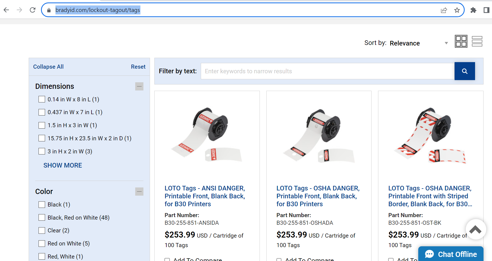
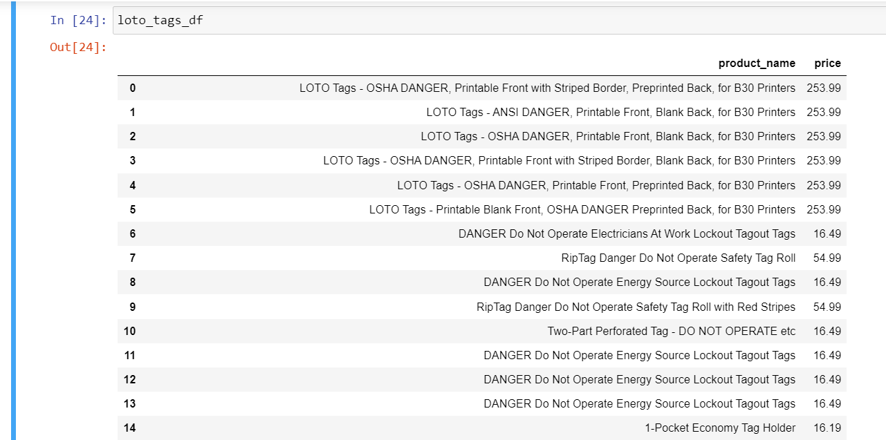
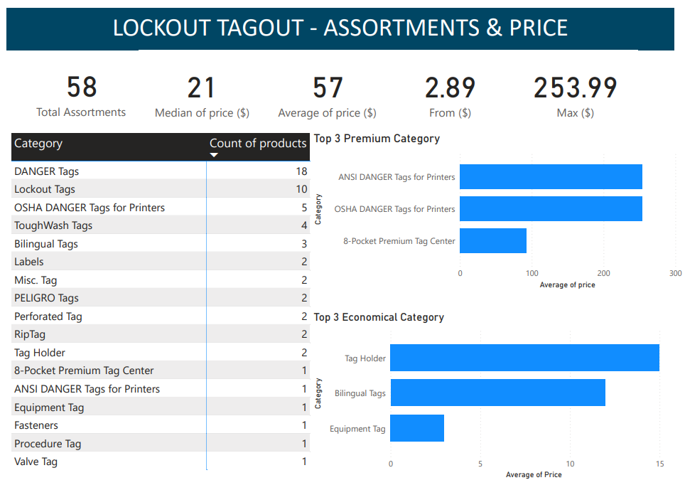

In my previous work experience, I learned that Lock Out Tag Out (LOTO) safety procedures prevent energy release from machinery during maintenance, so it's important to use them. I want to understand and report on the LOTO product assortment and pricing of Brady Corporation, a prominent LOTO supplier in the mid-west. This information will be helpful for businesses to ensure that they have the necessary LOTO products to comply with safety regulations & protect their workers.
1. Install Beautiful Soup, Selenium using pip command
2. Import the necessary libraries - Pandas, BeautifulSoup, Requests, Webdriver using import command
3. Initialize the Selenium driver and use driver.get() command to navigate to the Brady's LOTO product page
driver.get('https://www.bradyid.com/en-us/products/safety/lockout-tagout')
4. Find the HTML element that contains the data using the command - find_all()
5. Scrape the product name and price using Selenium commands - driver.find_element, content.get_attribute() and BeautifulSoup()
6. Clean the extracted data using strip(), split(), find(), contains() and slice() commands
6. Create a Pandas pd.DataFrame() to store the scraped data
7. Save the DataFrame to a file using to_csv() command
Input: 
Output: 
1. Brady offers a wide variety of Loto products to choose from, including Danger Tags, lockout tags, and tag holders
2. Most popular Brady Loto product is the DANGER Do Not Operate Electricians At Work Lockout Tagout Tags
3. Brady Loto products are available in a variety of languages
4. Top 3 economical category - Tag Holder, Bilingual and Equipment Tag
5. Top 3 premiuem category - ANSI, OSHA Tags for printers and Tag center
Using Power BI, I created a report that showed the average, maximum, and median prices of Brady Loto tags, grouped similar products, identified the top 3 economical and top 3 premium categories, and counted the number of products in each category.
Interactive Dashboard: 